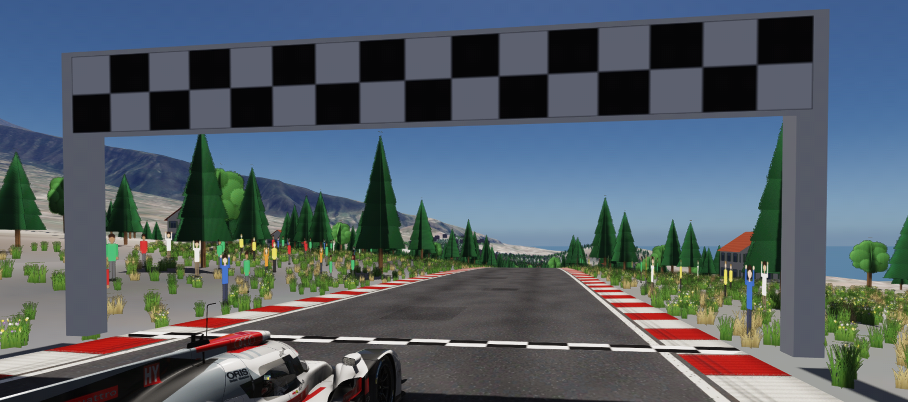

Exportar a Assetto Corsa
El circuito va directo a la carpeta del juego: el .kn5 y todos los archivos de datos.
- Datos del circuitoNombre, Carpeta (se genera sola), País, Ciudad, Autor.
- DestinoBuscar AC encuentra
content/tracksen Steam; si no, Elegir…. - OrientaciónGirar 180° parrilla y boxes si en el juego los coches salen mirando hacia atrás.
- Créditos y licenciasRevisa la lista de fuentes de datos que lleva el circuito (relieve e imagen) y del contenido importado (imágenes PNG, modelos
.glb, relieve de Blender): debes tener derecho a usarlo. El interruptor Añadir los créditos a la descripción está activado por defecto; el botón Ver aviso legal y licencias abre los textos completos. - Exportar a Assetto CorsaPulsa el botón y listo.
Con la línea de la IA ya se pueden usar rivales, la línea ideal de ayuda y el modo práctica con IA. La línea va por el centro de la pista y es un punto de partida: para una IA rápida, grábala en el juego y sustituye ai/fast_lane.ai.
Los muros no se definen en surfaces.ini (WALL es un tipo interno de Assetto Corsa) y funcionan como muros en el juego. Nunca sobrescribe un circuito que no haya creado AC Trackmaker: si existe la carpeta sin ac_tracker.txt, se niega y pide otro nombre.
Archivos generados
content/tracks/<carpeta>/
├── <carpeta>.kn5 Modelo 3D (kn5 v5, texturas DDS)
├── map.png Mapa del trazado
├── ac_tracker.txt Marca: solo se sobrescriben carpetas creadas por el editor
├── CREDITOS.txt Créditos: fuentes de datos con su cita y avisos de licencia
├── ai/
│ ├── fast_lane.ai Línea de la IA y línea ideal (un punto cada 2 m)
│ └── pit_lane.ai Solo si hay calle de boxes (IA a 80 km/h)
├── data/
│ ├── surfaces.ini ROAD, KERB, GRASS, WET, SNOW, DIRT, SAND, GRAVEL y PIT
│ └── map.ini
└── ui/
├── ui_track.json Nombre, país, ciudad, autor, longitud, ancho, nº de boxes
│ (+ créditos en la descripción si está activado)
├── outline.png
└── preview.png Captura de la vista 3D sin la interfazCREDITOS.txt empieza con «Creado con AC Trackmaker (editor independiente, no afiliado a Kunos Simulazioni ni a 505 Games).» y el enlace a la descarga oficial del editor. Después incluye el nombre y autor del circuito, las fuentes de datos con su cita, el contenido aportado por el autor y los avisos de licencia. Con Añadir los créditos a la descripción activado, la descripción del circuito en el juego empieza por «Creado con AC Trackmaker» con el enlace a itch.io y sigue con las fuentes de datos.
Para curiosos: detalles técnicos
- Piezas de menos de 65 000 vértices (índices de 16 bits del kn5).
- El relieve a menos de 300 m de una pista lleva colisión.
- El relieve se simplifica con la distancia a las pistas: mitad de detalle a partir de 1 km, otra vez a 4 km y a 10 km.
- Carreteras y pianos con
ksPerPixelNM(mapa de normales: el relieve de grietas, estrías, piedras y charcos también se ve en el juego); árboles, público y hierba conksPerPixelAT; el resto conksPerPixel. El suelo junto a la carretera usaksMultilayer: la ortofoto a máxima resolución (2048 px por bloque) más un grano que se repite, para que de cerca no se vea borroso. La tierra usa transparencia suave en los bordes. - Árboles, público y hierba con texturas DXT5, en piezas de 250 m y sin colisión.
fast_lane.aisale de la meta en el sentido de carrera, con un punto cada 2 m y la velocidad estimada según las curvas.- Aviso si el circuito pasa de 3 millones de triángulos.

Captura: el circuito en el juegoPendiente · 16:9